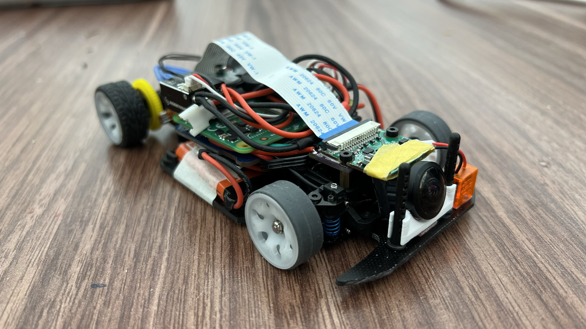
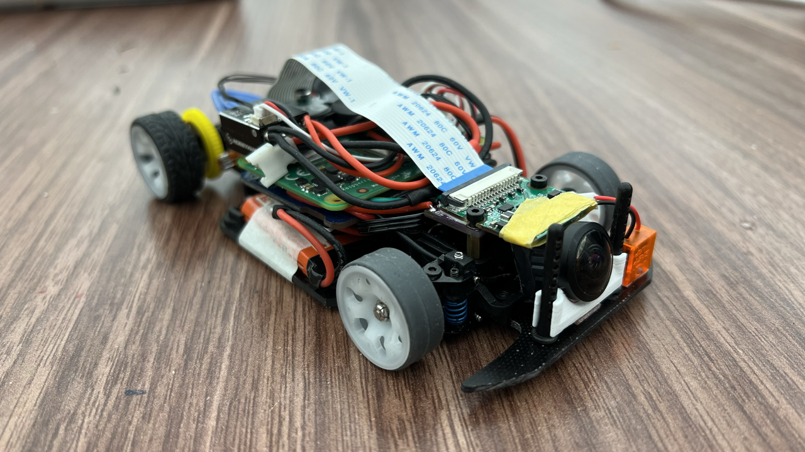

Research Experience
Robotics and Mechanism Laboratory (RoMeLa) Summer 2021 - Present
- Spine Enhanced Climbing Autonomous Legged Exploration Robot (SCALER)
- Y. Tanaka et al., "Scaler: A tough versatile quadruped free-climber robot," in Proc. IEEE/RSJ Intl. Conf. on Intelligent Robots and Systems, IROS, (Kyoto, Japan), Oct. 2022
- Improved hardware reliability by remaking wires and redoing the leg wire management
- Modified the purchased linear actuators by attaching cooling fans to prevent overheating damage
- Integrated an STM32 onboard the grippers to make them controllable via serial connection and redid the wiring so that the gripper is a standalone module connected by a single power line and 12 pin communication line
- Y. Shirai et al., "Simultaneous Contact-Rich Grasping and Locomotion via Distributed Optimization Enabling Free-Climbing for Multi-Limbed Robots", in Proc. IEEE/RSJ Intl. Conf. on Intelligent Robots and Systems, IROS, (Kyoto, Japan), Oct. 2022
- Rewrote a pre-existing MATLAB visualization code for SCALAR to improve usability and future expandability by modularizing each component (main chassis, limbs, grippers, etc.)
- Garama RC Racing Platform
- Wrote a camera orientation estimation script that would take in a series of the car's first person view and figures out how the car moves within 3D space based on features found using the ORB algorithm
- Reworked the wiring onboard by optimizing the wire lengths and fixed the soldering job done by the PhD student to improve reliability
- Collected driving data used to train the behavior cloning neural network


 

Interconnected & Integrated Bioelectronics Lab (I2BL) Spring 2020 - Spring 2021
- Worked for Prof. Sam Emaminejad to develop a near IR spectroscopy system for lower leg tissue oxygenation monitoring
- Looked into various transimpedance amplifier designs that improved the old design by achieving higher output precision with good noise performance, all with minimum power consumption
- Redesigned the circuit schematic and rerouted the PCB to make it more compact (approx. 40% board area reduction) so that it can be manufactured on a flexible PCB

Dunn Lab Fall 2019 - Winter 2022
- Worked with Prof. Bruce Dunn in the MSE department to develop a BLE enabled optoprobe device that is hooked up to a living mouse to send a two-channel optical stimulation to different parts of its brain via optical fibers
- Wrote a C++ script alongside another undergraduate student for the BMD-350 chip to communicate with an evaluation board hooked up with the computer
- Designed a custom GUI within MATLAB to send the appropriate serial commands to the evaluation board which transmitted a sequence of bits that determined what frequency the two LEDs flashed at


Hayato Kato